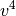

SAPT¶
Performs symmetry adapted perturbation theory (SAPT) analysis to quantitatively analyze noncovalent interactions.
General¶
AIO_CPHF¶
Do use asynchronous disk I/O in the solution of the CPHF equations? Use may speed up the computation slightly at the cost of spawning an additional thread.
- Type: boolean
- Default: false
AIO_DF_INTS¶
Do use asynchronous disk I/O in the formation of the DF integrals? Use may speed up the computation slightly at the cost of spawning an additional thread.
- Type: boolean
- Default: false
BASIS¶
Primary basis set, describes the monomer molecular orbitals
- Type: string
- Possible Values: basis string
- Default: No Default
DENOMINATOR_ALGORITHM¶
Denominator algorithm for PT methods. Laplace transformations are slightly more efficient.
- Type: string
- Possible Values: LAPLACE, CHOLESKY
- Default: LAPLACE
DENOMINATOR_DELTA¶
Maximum error allowed (Max error norm in Delta tensor) in the approximate energy denominators employed for most of the
and
evaluation.
- Type: double
- Default: 1.0e-6
DF_BASIS_ELST¶
Auxiliary basis set for SAPT Elst10 and Exch10 density fitting computations, may be important if heavier elements are involved. Defaults to DF_BASIS_SAPT
- Type: string
- Possible Values: basis string
- Default: No Default
DF_BASIS_SAPT¶
Auxiliary basis set for SAPT density fitting computations. Defaults to a RI basis.
- Type: string
- Possible Values: basis string
- Default: No Default
D_CONVERGENCE¶
Convergence criterion for residual of the CPHF coefficients in the SAPT
term.
- Type: conv double
- Default: 1e-8
E_CONVERGENCE¶
Convergence criterion for energy (change) in the SAPT
- Type: conv double
- Default: 1e-10
FREEZE_CORE¶
The scope of core orbitals to freeze in evaluation of SAPT
- Type: string
- Possible Values: FALSE, TRUE, SMALL, LARGE
- Default: FALSE
INTS_TOLERANCE¶
Minimum absolute value below which all three-index DF integrals and those contributing to four-index integrals are neglected. The default is conservative, but there isn’t much to be gained from loosening it, especially for higher-order SAPT.
- Type: conv double
- Default: 1.0e-12
NAT_ORBS¶
Do natural orbitals to speed up evaluation of the triples contribution to dispersion by truncating the virtual orbital space? Recommended true for all SAPT computations.
- Type: boolean
- Default: false
NAT_ORBS_T2¶
Do use MP2 natural orbital approximations for the  block of two-electron integrals in the evaluation of second-order T2 amplitudes? This approximation is promising for accuracy and computational savings, but it has not been rigorously tested.
- Type: boolean
- Default: false
NO_RESPONSE¶
Don’t solve the CPHF equations? Evaluate
and
instead of their response-including coupterparts. Only turn on this option if the induction energy is not going to be used.
- Type: boolean
- Default: false
OCC_TOLERANCE¶
Minimum occupation (eigenvalues of the MP2 OPDM) below which virtual natural orbitals are discarded for evaluating the triples contribution to dispersion.
- Type: conv double
- Default: 1.0e-6
PRINT¶
The amount of information to print to the output file for the sapt module. For 0, only the header and final results are printed. For 1, (recommended for large calculations) some intermediate quantities are also printed.
- Type: integer
- Default: 1
SAPT_LEVEL¶
The level of theory for SAPT
- Type: string
- Possible Values: SAPT0, SAPT2, SAPT2+, SAPT2+3
- Default: SAPT0
SAPT_MEM_CHECK¶
Do force SAPT2 and higher to die if it thinks there isn’t enough memory? Turning this off is ill-advised.
- Type: boolean
- Default: true
SAPT_MEM_SAFETY¶
Memory safety
- Type: double
- Default: 0.9
SAPT_OS_SCALE¶
The scale factor used for opposite-spin pairs in SCS computations. SS/OS decomposition performed for
- Type: double
- Default: 6.0/5.0
SAPT_SS_SCALE¶
The scale factor used for same-spin pairs in SCS computations. SS/OS decomposition performed for
- Type: double
- Default: 1.0/3.0
Expert¶
DO_THIRD_ORDER¶
Do compute third-order corrections?
- Type: boolean
- Default: false